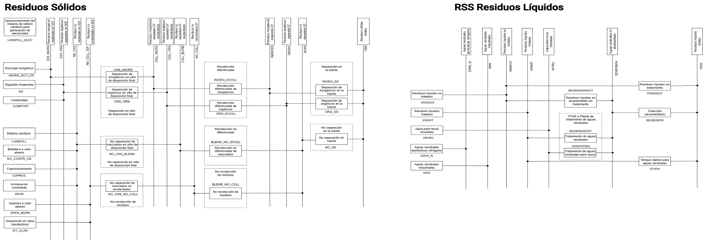
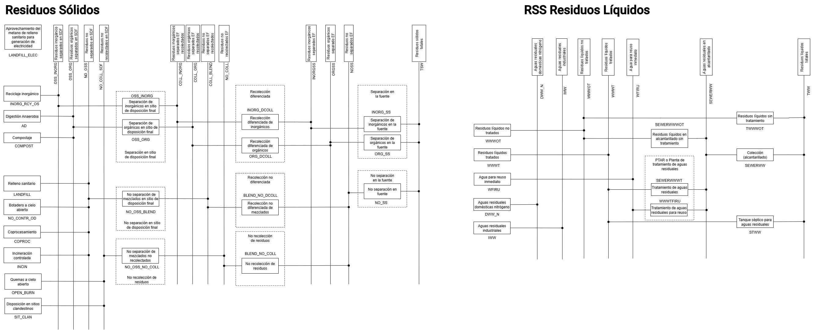

6.1. Estructura del modelo
Este sector produce emisiones por varias prácticas de disposición y tratamiento de residuos sólidos y aguas residuales generadas en el país. Para conocer el impacto de las iniciativas de mitigación del cambio climático, los escenarios de emisiones de GEI son representaciones numéricas que exploran diversas estrategias de reducción de emisiones, generando comprensiones y discusiones que resultan de gran utilidad para guiar el diseño de políticas públicas. Para la construcción de los escenarios del sector Residuos se recopiló y analizó información sobre generación producción per cápita de residuos, generación de aguas residuales, porcentajes de reciclaje, Además, se consideraron datos de emisiones de GEI sectoriales reportados en el Inventario Nacional de Gases de Efecto Invernadero.
Las categorías y subcategorías que conforman este sector se enlistan a continuación:
5A: Disposición de residuos sólidos
5A1: Sitios de disposición de residuos sólidos gestionados
5A2: Sitios de disposición de residuos sólidos no gestionados
5B: Tratamiento biológico de residuos sólidos
5B1: Compostaje
5C: Incineración y quema abierta de residuos
5C1: Incineración de residuos
5D: Eliminación y tratamiento de aguas residuales
5D1: Aguas residuales domésticas
5D2: Aguas residuales industriales
El modelo del sector Residuos fue estructurado a partir de la base desarrollada en el PLANMICC, pero se adaptó incorporando insumos del modelo NDC, con el objetivo de contar con una representación más completa de las tecnologías y emisiones del sector.
El resultado es un Escenario Tendencial Nacional que representa la evolución de las emisiones de GEI del sector Residuos bajo el supuesto de mantener las prácticas habituales de gestión. Es decir, sin considerar la incorporación de iniciativas de mitigación. Este escenario, como se menciono es una representación del escenario tendencial del PLANMICC referenciando las magnitudes y tendencias de emisiones de GEI reportadas por la Segunda NDC, consecuentemente proyectada hasta el 2035.
En la Figura 6.1. se presenta la estructura final del modelo mixto (RSS residuos sólidos), que constituye el insumo de referencia para el sector y en la Figura 6.2 se representa para el sector de aguas residuales.

Figura 6.1 Diagrama de referencia del modelo del sector Residuos Sólidos.

Figura 6.2 Diagrama de referencia del modelo del sector Aguas Residuales.
En la Tabla 6.1, Tabla 6.2 y Tabla 6.3 se incluye la nomenclatura de los sets Technologies, Commodities y Emission del modelo de la Figura 6.1 y la Figura 6.2.
Descripción |
Código |
|---|---|
Coprocesamiento |
COPROC |
Incineración controlada |
INCIN |
Quema a cielo abierto |
OPEN_BURN |
Disposición en sitios clandestinos |
SIT_CLAN |
Aprovechamiento del metano de relleno sanitario para generación de electricidad |
LANDFILL_ELEC |
Reciclaje inorgánico |
INORG_RCY_OS |
Digestión anaerobia |
AD |
Compostaje |
COMPOST |
Relleno sanitario |
LANDFILL |
Botadero a cielo abierto |
NO_CONTR_OD |
Separación de inorgánicos en sitio de disposición final |
OSS_INORG |
Separación de orgánicos en sitio de disposición final |
OSS_ORG |
No separación de mezclados en sitio de disposición final |
NO_OSS_BLEND |
Recolección diferenciada de inorgánicos |
INORG_DCOLL |
Recolección diferenciada de orgánicos |
ORG_DCOLL |
Recolección no diferenciada de mezclados |
BLEND_NO_DCOLL |
Separación de inorgánicos en la fuente |
INORG_SS |
Separación de orgánicos en la fuente |
ORG_SS |
No separación en la fuente |
NO_SS |
Residuos líquidos no tratados |
WWWOT |
Residuos líquidos tratados |
WWWT |
Agua para reúso inmediato |
WFIRU |
Residuos líquidos en alcantarillado sin tratamiento |
SEWERWWWOT |
Tratamiento de aguas residuales |
SEWERWWWT |
Tratamiento de aguas residuales para reúso |
WWWTFIRU |
Residuos líquidos sin tratamiento |
TWWWOT |
Recolección (alcantarillado) |
SEWERWW |
Tanque séptico para aguas residuales |
STWW |
Aguas residuales industriales |
IWW |
Descripción |
Código |
|---|---|
Residuos inorgánicos separados en sitio de disposición final |
OSS_INORG |
Residuos orgánicos separados en sitio de disposición final |
OSS_ORG |
Residuos no separados en sitio de disposición final |
NO_OSS |
Residuos inorgánicos recolectados |
COLL_INORG |
Residuos orgánicos recolectados |
COLL_ORG |
Residuos no separados recolectados |
COLL_BLEND |
Residuos inorgánicos separados en la fuente |
INORGSS |
Residuos orgánicos separados en la fuente |
ORGSS |
Residuo no separado en la fuente |
NOSS |
Residuos sólidos |
TSW |
Residuos líquidos no tratados |
WWWOT |
Residuos líquidos tratados |
WWWT |
Agua para reúso inmediato |
WFIRU |
Aguas residuales en alcantarillado |
SEWERWW |
Residuos líquidos totales |
TWW |
DESCRIPCIÓN |
CÓDIGO |
|---|---|
Disposición en rellenos sanitarios |
LANDFILL |
Botaderos a cielo abierto sin control |
NO_CONTR_OD |
Procesos de compostaje y valorización biológica de orgánicos |
COMPOST |
Incineración de residuos |
INCIN |
Aguas residuales domésticas sin colecta (on-site) |
TWWWOT |
Aguas residuales recolectadas en sistemas de alcantarillado |
SEWERWW |
Tratamiento en tanques sépticos |
STWW |
Tratamiento de aguas residuales industriales |
IWW |